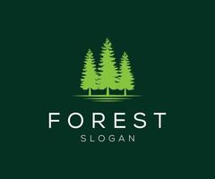

Importance and Benefits of Forest:

“What are the benefits of forests?” and “What is the importance of forests
to humans?” The answers to such questions are hidden in the forests! Forests cover one-third of
all land on Earth and provide a vital organic infrastructure for the planet's densest, most
diverse life forms. Forests continue to provide livelihoods for countless species and billions
of people; Thanks to the benefits of forests, the environmental and economic cycle is constantly
renewing itself. However, people cause the destruction of millions of acres of forested areas
every year due to fire, agricultural land opening, urbanization, heating fuel. If they knew the
answer to the question of what is the importance of forests for people, they would not continue
to destroy it in this way.
Control of Forest Fires:

Glass and glass shards should not be thrown into the forests. (The glass
attracts sunlight to the grass like a magnifying glass. The grass will ignite, causing the grass
to ignite, thus creating a fire.)
Grill ashes should not be poured without extinguishing. Because grass has the potential to catch fire.
When we see a fire, we should call the 112 emergency number.
Public awareness should be raised by officials and environmental organizations, and seminars and conferences should be organized on this subject.
We should not light a fire in the forest, if we have to, we should put a stone around the fire in a grassless area.
Grill ashes should not be poured without extinguishing. Because grass has the potential to catch fire.
When we see a fire, we should call the 112 emergency number.
Public awareness should be raised by officials and environmental organizations, and seminars and conferences should be organized on this subject.
We should not light a fire in the forest, if we have to, we should put a stone around the fire in a grassless area.
The Harms of Cutting Trees:

Trees and tree communities, which are shown as the lungs of the world, have
a great importance for the continuation of human life in our world. The oxygen we breathe every
day is produced by trees and reaches us. A tree must reach a certain age in order to produce
high levels of oxygen. Cutting trees that have grown in natural conditions for many years to a
level that can give enough oxygen is almost a crime. Although articles are constantly published
in the media about the harms of cutting trees and various information is given, this situation
could not be prevented. In our country, trees are killed at a high rate in certain periods. The
only way to prevent this is to raise awareness of individuals.
Cooming soon..

...